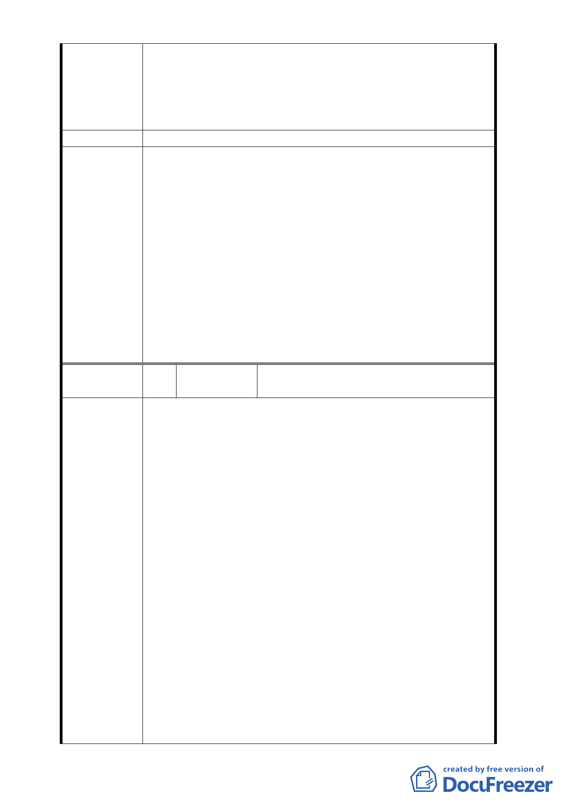

言是正面的，為何不能放寬店鋪使用？僅東側新東街能
留設對店鋪商業面的延展性較低。
4．我們這塊地是個相當完整且適合做都更的地方，有多少
住戶期盼改建，市政府至少給我們一個明確的答案，對
市民也有個交待。
建議辦法
一、 本案除計畫書第18頁第四點「社區活動延續」之第
（一）項之文字，依「台北市民生東路新社區特定專
用區建築管理管制要點」規定，應予刪除外，其餘依
市府所送計畫書、圖通過。
二、 因「臺北市老舊中低層建築社區辦理都市更新擴大協
委員會決議
助專案計畫」，僅就申請容積獎勵予以核定，不涉及
原都市計畫使用性質規定之變更，民眾陳情希放寬商
業使用之意見需就民生東路新社區整體考量，故請都
市發展局盡速依本會第 626 次委員會議附帶決議（略
以）「為維持民生東路社區既有之地區特性及都市紋
理，請市府都市發展局…針對該區的整體更新計畫研
擬出指導性都市設計管制原則提會報告」辦理，俾供
後續申請案之依循。
編
號3
陳情人
邱張冠、翁明純、僑誼實業股份有限公
司張群飛等 3 人
本案原本是臺北好好看系列一的都市更新案，在當時
為促進地區基地與郵局間之活動延續，同時塑造地區休閒、
居住等空間與使用氛圍，因此在當年臺北市都市計畫委員會
即同意本案基地一、二樓（面臨新東街及新東街 31 巷）之
可比照第三種商業區做為商業使用，鑑此，在當年都市計畫
書內容即明訂「建築物之使用除比照『臺北市民生東路新社
區特定專用區建築管制要點』住宅用地之使用外，地上一、
二層得作第三種商業區之使用」。其後，都市更新實施者亦
依這個原則規劃，並與住戶洽談都市更新整合。
陳情理由
其後，本案涉及複雜之整合工作，無法順利完成整合
，故轉軌依老舊公寓更新專案繼續辦理都市更新，但都市發
展局未便同意本次之變更細部計畫案比照前次變更案土地
使用分區管制之「地上一、二層得作第三種商業區之使用」
規定，這對於原有一樓住戶權益影響重大，原本住戶期待都
市更新後可以回到原本的店面使用的希望落空，原本大家在
這邊做生意、開公司都已經幾十年了，配合辦理都市更新後
，變得生意也不能做、公司也不能開，對於已經同意更新的
住戶實在不能接受，而對於那些還沒同意更新的住戶就更難
說服他們參加都市更新。
希望 貴府考量都市更新整合不易及住戶對更新後能
- 11 -